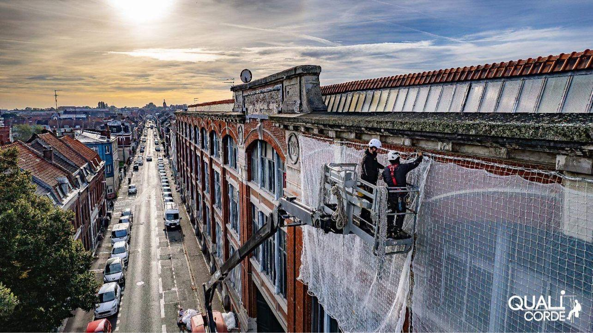

Cordiste Beaulieu
Travaux sur Corde
Beaulieu-sur-Mer
NOS SERVICES

À Beaulieu-sur-Mer, nos cordistes vous proposent le nettoyage de vitres en hauteur, y compris dans les zones les plus difficiles d’accès. Profitez de façades impeccables et de vitrages parfaitement transparents grâce à notre savoir-faire.
CONTACTEZ - NOUS
RAVALEMENT – Maçonnerie & Peinture
À Beaulieu-sur-Mer, renovez vos façades sans echafaudage. Nos cordistes experimentes assurent vos travaux de ravalement, peinture et maçonnerie en hauteur pour valoriser et proteger durablement votre patrimoine bâti.
CONTACTEZ - NOUS
À Beaulieu-sur-Mer, nous intervenons sur vos silos et equipements industriels pour l’entretien, la maintenance et l’inspection en hauteur. Nos solutions sur cordes garantissent des interventions rapides et securisees sans interrompre vos activites.
CONTACTEZ - NOUS
SECURITE – Lignes de vie & Filets
À Beaulieu-sur-Mer, protegez vos equipes et ouvrages en hauteur. Nous assurons l’installation de lignes de vie, filets antichute et points d’ancrage, conformes aux normes en vigueur, pour garantir un travail securise sur toutes structures.
CONTACTEZ - NOUS
URGENCE – Purge, Bâchage & Filets
À Beaulieu-sur-Mer, en cas de chute de materiaux, intemperies ou sinistres, nos equipes interviennent en urgence pour securiser vos bâtiments : purge, pose de bâches et filets de protection, reactivite maximale pour votre tranquillite.
CONTACTEZ - NOUS
EVENEMENTIEL – Enseignes & Animations
À Beaulieu-sur-Mer, nous realisons la pose en hauteur de vos enseignes, banderoles et elements scenographiques. Nos cordistes garantissent une mise en place discrète, rapide et securisee pour sublimer vos evenements.
CONTACTEZ - NOUS
ANTI-NUISIBLE – Pics & Filets de protection
À Beaulieu-sur-Mer, nous protegeons vos bâtiments contre les nuisibles. Installation discrète et durable de pics anti-pigeons, filets de protection et solutions adaptees pour preserver l’esthetique de vos façades.
CONTACTEZ - NOUS
AUTRES – Eolien, Soudure, Electricite...
À Beaulieu-sur-Mer, nous realisons tous types de travaux techniques en hauteur : maintenance eolienne, soudure, interventions electriques, reglages de phares… Nos cordistes qualifies vous garantissent des prestations sur-mesure, securisees et efficaces.
CONTACTEZ - NOUSINDUSTRIE (silos & maintenance) : À Beaulieu-sur-Mer, nous assurons la maintenance et l’inspection en hauteur de vos silos et equipements industriels. Nos cordistes specialises interviennent avec precision, même en milieux complexes, pour garantir la securite et la continuite de vos installations.
Installation de SECURITE – Lignes de vie & Filets : À Beaulieu-sur-Mer, nous installons lignes de vie, filets antichute et points d’ancrage pour securiser vos chantiers et bâtiments. Nos systèmes sont adaptes à toutes les structures et conformes aux normes en vigueur.
Nettoyage de vitres en hauteur : À Beaulieu-sur-Mer, nous nettoyons vos vitrages en hauteur avec soin. Nos cordistes accèdent aux surfaces vitrees les plus difficiles pour garantir une proprete parfaite et un eclat durable sur tous vos bâtiments.
RAVALEMENT – Maçonnerie & Peinture : À Beaulieu-sur-Mer, sublimez vos façades avec nos prestations de ravalement, peinture et maçonnerie en hauteur. Nos cordistes vous garantissent un travail soigne, securise et sans echafaudage.
URGENCE – Purge, Bâchage & Filets : À Beaulieu-sur-Mer, nous intervenons en urgence après chutes de materiaux ou sinistres. Nos cordistes assurent la purge des façades, le bâchage et la pose de filets de protection avec une reactivite maximale.
EVENEMENTIEL – Enseignes & Animations : À Beaulieu-sur-Mer, nous posons en hauteur vos enseignes, banderoles et decors evenementiels. Nos cordistes assurent une installation rapide et soignee, même sur les structures les plus complexes.
ANTI-NUISIBLE – Pics & Filets de protection : À Beaulieu-sur-Mer, nous protegeons vos bâtiments en hauteur contre les nuisibles. Nos solutions : pics anti-pigeons et filets de protection, discrets et efficaces, pour preserver durablement l’esthetique de vos façades.
AUTRES – Eolien, Soudure, Electricite... : À Beaulieu-sur-Mer, nous intervenons en hauteur pour des travaux techniques specifiques : maintenance eolienne, soudure, electricite, pose de phares… Des prestations sur-mesure realisees en toute securite.
Des cordistes experimentes et du materiel specialise à Beaulieu-sur-Mer
À Beaulieu-sur-Mer, notre societe de cordistes met à votre service une equipe qualifiee dans les travaux en hauteur, equipee de materiel professionnel de dernière generation. Nous intervenons sur tous types de bâtiments, même les plus complexes d’accès, pour des prestations telles que le nettoyage de vitres, le lavage de façades, la peinture exterieure ou encore la securisation des toitures et l’installation de lignes de vie. Grâce à notre maîtrise des accès par corde, nous garantissons des interventions efficaces, securisees et conformes aux normes en vigueur.
Des tarifs adaptes à vos besoins à Beaulieu-sur-Mer
Une offre transparente et competitive
Nos prestations en hauteur à Beaulieu-sur-Mer sont pensees pour allier qualite, securite et prix maîtrise. Que ce soit pour du nettoyage, de la peinture ou la mise en securite, nous vous proposons des solutions professionnelles à des tarifs avantageux. Demandez dès maintenant votre devis gratuit et recevez une estimation claire, rapide et sans engagement.
DEVIS GRATUITPourquoi choisir Cordiste 06 à Beaulieu-sur-Mer ?
En faisant appel à Cordiste 06 à Beaulieu-sur-Mer, vous beneficiez d’un service serieux, reactif et de qualite. Notre equipe est reconnue dans les Alpes-Maritimes pour son expertise dans les travaux en hauteur. Chaque intervention est menee avec rigueur, qu’il s’agisse de nettoyage de façade, de peinture d’accès difficile, d’entretien de vitres ou de securisation de toiture. De l’analyse du chantier à la finition, nous vous accompagnons avec professionnalisme à chaque etape.
Des contrats personnalises pour plus de serenite à Beaulieu-sur-Mer
Interventions ponctuelles
Entretien programme
Pour vos besoins à Beaulieu-sur-Mer, nous proposons des contrats sur mesure, flexibles et transparents. Que vous ayez besoin d’une intervention ponctuelle (peinture, nettoyage, securisation) ou d’un suivi regulier de vos structures en hauteur, Cordiste 06 s'engage sur la qualite, les delais et les tarifs. Nos solutions vous garantissent serenite et maîtrise budgetaire.
Votre partenaire de confiance à Beaulieu-sur-Mer pour les travaux en hauteur
Present à Beaulieu-sur-Mer, Cordiste 06 intervient pour tous types de travaux en hauteur, en urgence ou sur rendez-vous. Nous accompagnons aussi bien les particuliers que les professionnels avec des prestations claires et des contrats sans surprise.
Nos cordistes accèdent aux zones difficiles pour realiser le nettoyage de vitres, le ravalement de façades, la peinture en hauteur ou encore la pose de lignes de vie et la securisation des toitures. Nous utilisons des techniques par corde, ideales là où les nacelles sont inutilisables.
Disponibles 7j/7 et 24h/24, y compris les jours feries, nos equipes assurent des interventions rapides, securisees et conformes aux normes. Que ce soit pour un chantier ponctuel ou un contrat d’entretien, nous sommes votre solution à Beaulieu-sur-Mer.